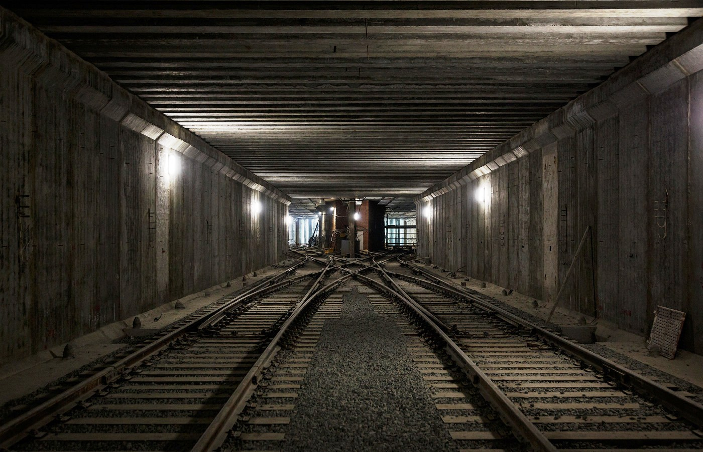
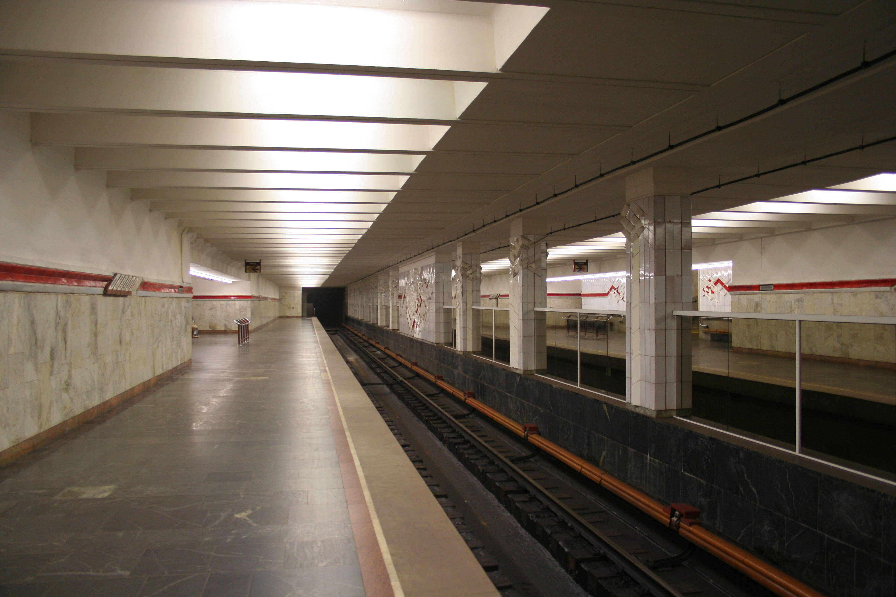
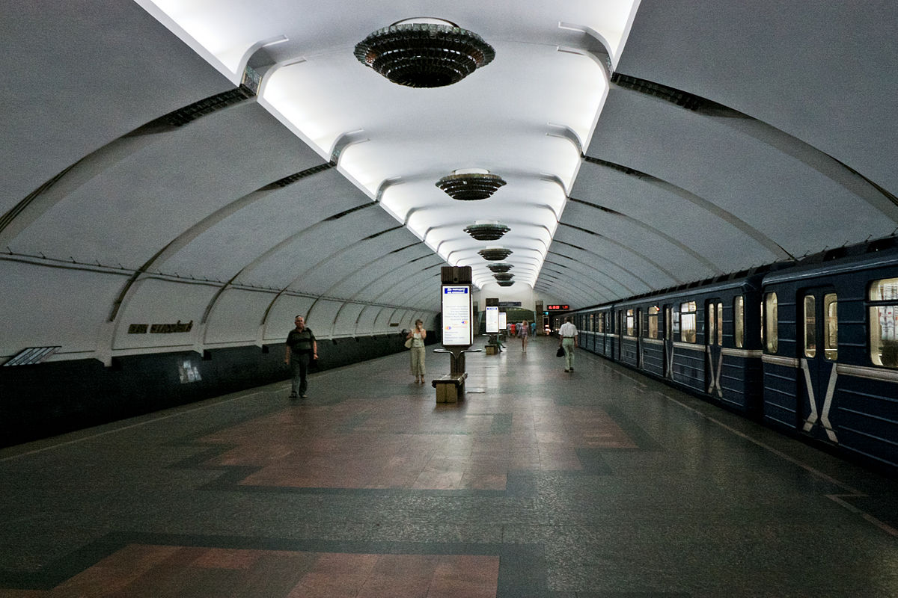

ЛЕГЕНДЫ
Минское метро.
Какие тайны скрыты под землёй?
«Искусственный» миллион
Сегодня белорусская столица всеми способами активно борется с постоянно увеличивающимся числом жителей, потому что, как говорится, «Минск не резиновый». А в середине 70-х годов счет минчан у белорусского Центрального комитета партии был особый. Дело в том, что за право строить собственное метро на союзные барыши в то время боролись почти 10 городов СССР. И для того чтобы, «строительство метрополитена было обусловленным и эффективным», городу необходимо было иметь один миллион жителей. В начале 70-х Минску до заветного миллиона не хватало почти 100 тысяч…
В связи с этими событиями существует легенда о том, что на одном из партсобраний было решено нужную сотню тысяч минчан привлечь из белорусских регионов. Предпочтительно, конечно, молодежь, а также военные семьи. Якобы по этому случаю некоторые белорусские вузы снизили планку поступления для абитуриентов из районных центров и деревень. Как это происходило, безусловно, до сих пор страшная тайна. Но факт остается фактом: в 1975 году в Минске родился миллионный житель, а в 1977-м Центральный комитет партии в Москве подписал распоряжение о начале работ по строительству Минского метрополитена.
Однако не все шло гладко. В начале 80-х, когда метрострой в Минске бурлил вовсю, в Кремле нашлись «доброжелатели», рассказавшие руководству партии о том, как Минску удался «искусственный» миллион. И в 1980-м олимпийском году в Москве всерьез стали задумываться о том, как бы законсервировать белорусскую стройку. Но хорошо подготовленные к экзерсисам Кремля белорусы дали решительный отпор чиновникам Госплана СССР, наглядно продемонстрировав им масштаб уже начатых работ и доказав значимость метрополитена для развития республики.
Недостроенная «Комсомольская»
Один из самых правдоподобных мифов столичного метро касается строительства несуществующей сегодня станции с условным названием «Комсомольская». Поговаривают, что в момент первоначального проектирования первой линии минской подземки в конце 70-х годов XX века в планах строителей было возведение не восьми, а девяти метростанций. Дополнительный объект собирались построить между функционирующими сегодня станциями «Пл. Ленина» и «Октябрьская». По слухам, просочившимся через плотные потоки Интернета, «Комсомольская» была чуть ли не правительственным заказом по линии КГБ БССР и на плане располагалась аккурат у входа в белорусский Комитет госбезопасности. Но по неизвестным причинам дополнительная станция на коротком отрезке от площади Независимости до Октябрьской площади так и не появилась. Видимо, «грандиозный» проект не оценили в кабинетах на Лубянке.
«Метро-2» по-белорусски
Некоторые знатоки истории развития минского метрополитена сходятся в мыслях о том, что на небольшой территории от станции «Пл. Ленина» до станции «Октябрьская», кроме мифической «Комсомольской», существует еще и система продуманных коммуникаций специального назначения в виде эвакуационных шахт и бомбоубежищ. Все эти шахты якобы были спроектированы во время закладки общегражданских станций и тоннелей.
Один из мифов гласит, что в начале 90-х через входы в подозрительные погреба, расположенные во дворах «сталинок» на нынешнем проспекте Независимости, особо любопытные граждане могли попасть в застенки здания Комитета госбезопасности, а потом и вовсе на территорию СИЗО №1 на Володарского. Правда это или вымысел, сегодня вряд ли кто-то скажет. Но факт: специальные вентиляционные отводы, нехарактерные для других тоннелей минского метро, можно и сегодня обнаружить на придворовых территориях домов по проспекту Независимости и улице Карла Маркса.
Диггеры на специализированных форумах, посвященных тайнам тоннелей минского метро, обсуждают версию о том, что белорусское «Метро-2» - это несколько дополнительных тоннелей неглубокого залегания, соединяющих объекты особой важности: Дом правительства, Комитет госбезопасности и Дворец Республики (один из выходов тоннелей имеется во внутреннем дворике ГУМа). Существует также легенда о наличии под зданием Дворца Республики служебной ветки метро, соединяющей «Купаловскую» и «Октябрьскую».
Закопанные вестибюли «Пролетарской» и «Молодежной»
Многие минчане, проживающие в непосредственной близости от «Пролетарской», долгое время, спускаясь в метро, пытались представить себе расположение платформы станции под землей. Почему «Пролетарская» ограничена лишь одним входом, хотя в непосредственной ее близости находится железнодорожная станция Минск-Восточный с высоким порогом пассажиропотока?
Небольшой эксперимент по поиску якобы существующего второго вестибюля станции, загороженного бетонной стеной и монументальной скульптурой пролетария на платформе, дал удивительный результат. Вход в вестибюль странным образом ограничен на улице. Он представляет собой некое подобие трансформаторной будки за одной из пятиэтажек по улице Судмалиса. Будка предусмотрительно закрыта решеткой, но... через стальные прутья невооруженным глазом можно рассмотреть аккуратный пол стандартного мраморного вестибюля метрополитена! Беседа с местной жительницей почтенного возраста, показала, что загадочный вестибюль «Пролетарской» всегда позиционировался как вход в бомбоубежище. Правда, работники станции никаких комментариев по этому поводу так и не дали.
Кстати, «Пролетарская» не единственная станция, имеющая закрытые бетонными стенами загадочные вестибюли и иные помещения. Так, сооруженный на «Молодежной» эскалатор никогда не начинал перевозить людей, потому что выход из метро с его стороны сразу же замуровали. Виной тому железнодорожные пути, которые намертво легли прямо у второго входа в «Молодежную».
«Октябрьская» vs «Купаловская»
Еще одна интересная история о столичном метрополитене связана с частью соединительного перехода между станциями «Купаловская» и «Октябрьская». Постоянные посетители минского метро могли замечать дополнительный выход с неработающими турникетами слева от спуска на платформу «Купаловской» из общего вестибюля двух станций. Откроем завесу тайны! Это один из самых известных долгостроев столичной подземки, где работы прекратились еще в середине 80-х. Среди особо впечатлительных минчан до сих пор ходят странные слухи о его происхождении. Даже несмотря на то, что этот выход является всего лишь южной частью подземной галереи соединительного коридора «Купаловской» и «Октябрьской» и ведет на проспект Независимости. Считается, что якобы зловещего вида галерея представляет собой не что иное, как аварийное помещение, где хранятся взрывчатые вещества на случай команды о диверсионной ликвидации крупного метроузла.
Подводная «Первомайская»
«Первомайская» - единственная станция минского метро с боковыми платформами. Она построена в непосредственной близости к Свислочи. Исследователи считают, что именно такая водная близость и не позволила метростроевцам в свое время соорудить традиционную «островную» платформу, так как изначально была допущена ошибка в ее проектировке. Не учли наличия особых пород песка вблизи Свислочи («плывунов»), что не позволило бурить необходимую конструкцию платформы.
Кстати, именно проблемы при строительстве задержали пуск станции. Официально «Первомайская» была открыта вместе с другими станциями «Автозаводской» линии 31 декабря 1990 года, но фактически начала работать лишь в середине 1991-го. До этого времени метропоезда проезжали «Первомайскую», следуя сразу на «Купаловскую» и «Пролетарскую».
Кстати, несколько лет назад поговаривали о том, что «Первомайскую» и вовсе закроют в связи с ее аварийным состоянием, усугубляющимся подмыванием стен водами Свислочи. Как вариант причины закрытия обсуждался низкий пассажиропоток станции и практически стопроцентная нерентабельность ее работы на пустыре.
А еще одна история про «Первомайскую» гласит, что станция вообще не проектировалась в начале строительства второй линии минского метро. Согласно легенде, с просьбой о сооружении станции вблизи стадиона в центре Минска к руководству республики обратились некие воротилы профессионального спорта страны.
Пострадавшая станция «Парк Челюскинцев»
Станции минского метро, безусловно, не настолько художественно оригинальны, как станции московской подземки, но тем не менее. Над созданием дизайна отдельных вестибюлей в свое время трудились специалисты высокого класса. Так, над «Институтом культуры» и «Пл. Якуба Коласа» поработали фолк-дизайнеры, над «Московской» и «Пл. Ленина» - конструктивисты. А вот «Парку Челюскинцев» с художественным оформлением не повезло.
Дело в том, что Петр Машеров предлагал оформить станцию в память о несчастной Хатыни, но госчиновники из Москвы не приняли дизайн от Машерова, сославшись на изрядную печальность события. Взамен москвичи предложили обыденную тему «Времена года». Однако за несколько недель до сдачи станции в Минск пришло новое решение из Госплана - тему «Времена года» отменить. А вот что делать вместо, госплановцы не сообщили. Вот и бледнеет «Парк Челюскинцев» перед оригинальным оформлением прочих станций.
Забытые названия станций
По большому счету в названиях станций минского метро нет ничего особенного и тайного. Большинство из них имеют вполне адекватные советские названия, которые, согласно мировой практике, привязаны к наземным географическим объектам. Тем не менее привычные для нас названия станций не всегда были такими.
Дело в том, что за несколько недель до открытия метрополитена в Минске решением «старших» товарищей из Москвы части станций присвоили новые названия. Это было связано с мнением Кремля о том, что белорусские объекты именуются так же, как и их московские собратья. Так, в 1984 году имена сменили: «Институт культуры» (бывш. «Московская»), «Октябрьская» (бывш. «Центральная площадь»), «Академия наук» (бывш. «Академическая»), «Парк Челюскинцев» (бывш. «Парк имени Челюскинцев») и «Московская» (бывш. «Волгоградская»).
Не получили первоначальных имен по разным причинам и в разные годы: «Могилевская» (бывш. «Социалистическая»), «Автозаводская» (бывш. «Автозавод»), «Партизанская» (бывш. «Партизанский проспект»), «Пролетарская» (бывш. «Минск-Восточный»), «Фрунзенская» (бывш. «Юбилейная»), «Спортивная» (бывш. «Раковская»), «Каменная Горка» (бывш. «Красная Горка»).
Уважаемые читатели! Если вам известны другие интересные истории и легенды о минском метро, отправляйте их через кнопку "Рассказать легенду" внизу страницы.